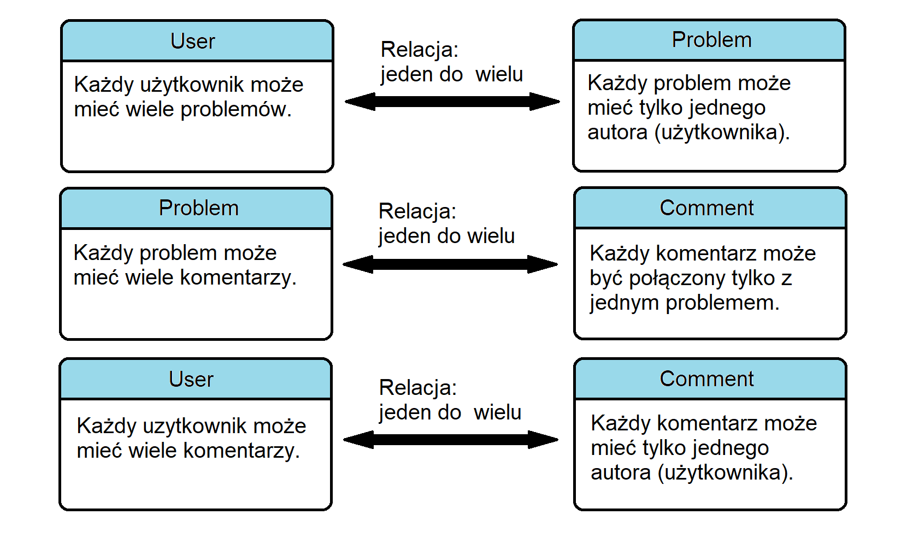

Bieżący dokument zwiera instrukcję użytkowania aplikacji ElePro. Opisana jest w nim także architektura projektu.
1. Wprowadzenie do zawartości dokumentu
a. Pierwsze spotkanie z aplikacją
Adres www.domena.pl (w środowisku developerskim: localhost:5000) przeniesie nas na stronę aplikacji. Strona www jest prostym blogiem o tematyce elektroniki. Użytkownik może na niej opublikować post ze swoim problemem. Inni użytkownicy rozwiążą problem. W zakładce problemy możemy przeczytać najnowsze posty użytkowników. Tylko po rejestracji i zalogowaniu możemy utworzyć własny problem i skomentować (rozwiązać) problem innego członka społeczności.
W celu założenia konta udajemy się do zakładki rejestracja. Wypełniamy formularz. Pola formularza są poddane walidacji po przesłaniu dokumentu na serwer. Walidacja sprawdza czy:
- nazwa użytkownika składa się z przynajmniej 2 liter, nie jest już wykorzystana w bazie danych oraz nie zawiera niecenzuralnych słów,
- email użytkownika nie jest już wykorzystany w bazie danych,
- hasło zwiera przynajmniej 1 literę i 1 cyfrę,
- użytkownik nie jest robotem.
Użytkownik po założeniu konta musi potwierdzić swoją tożsamość, klikajac w link otrzymany w mailu.
W zakładce logowanie użytkownik, posiadający konto, może się zalogować. Link Zapomniałem hasła umożliwi użytkownikowi zmianę hasła jeżeli go zapomniał.
W celu utworzenia nowego problemu należy otworzyć zakładkę Nowy problem. Następnie użytkownik musi wypełnić formularz, podając tytuł problemu, kategorię oraz opis samego problemu. Po wysłaniu formularza, problem zostaje umieszczony w zakładce problemy. Użytkownik może w każdym momencie zmodyfikować problem lub go usunąć. Wszyscy użytkownicy portalu mogą go komentować a tym samym rozwiązać problem.
Zalogowany użytkownik może zmienić swoją nazwę, adres email, zdjęcie profilowe, a także hasło w zakładce Mój Profil.
Aplikacja w swoim funkcjonowaniu wykorzystuje:
- mini framework Flask oraz jego rozszerzenia (plik requirements.txt),
- zdalną bazę danych PostgreSQL,
- framework Bootstrap,
- ikony Font Awesome.
Struktura projektu:
+---docs | relations.png | usage_and_design.html | usage_and_design.txt | \---ELEPRO | manage.py | requirements.txt | run.py | +---elepro | | app.py | | config.py | | extensions.py | | __init__.py | | | +---blueprints | | | __init__.py | | | | | +---errors | | | | views.py | | | | __init__.py | | | | | | | \---templates | | | \---errors | | | 403.html | | | 404.html | | | 405.html | | | 500.html | | | | | +---post | | | | forms.py | | | | models.py | | | | views.py | | | | __init__.py | | | | | | | \---templates | | | \---post | | | about.html | | | create_problem.html | | | home.html | | | problem.html | | | problems.html | | | | | \---user | | | forms.py | | | functions.py | | | models.py | | | validations.py | | | views.py | | | __init__.py | | | | | \---templates | | \---user | | account.html | | login.html | | new_password.html | | register.html | | reset_password.html | | unconfirmed.html | | | +---static | | | main.css | | | | | \---images | | | logo.png | | | | | \---pictures_of_users | | | \---templates | +---includes | | _flash_messages.html | | _logo.html | | _macros.html | | _navbar.html | | | \---layout | base.html | +---migrations | \---ven_eleproELEPRO - główny katalog aplikacji.docs - główny katalog dokumentacji.elepro - katalog zawierający kod aplikacji i pliki statyczne.run.py - skrypt uruchamiający aplikację w środowisku deweloperskim.manage.py - skrypt zarządzający bazą danych.config.py - skrypt konfigurujący ustawienia aplikacji (wrażliwe dane są usunięte).requirements.txt - plik z modułami koniecznymi do działania aplikacji
W pliku ELEPRO/elepro/config.py znajduje się klasa odpowiadająca za konfigurację aplikacji.
Flask łączy się z bazą danych wykorzystując rozszerzenia SQLAlchemy. Maper obiektowo relacyjny tworzy obiekty w aplikacji na podstawie tabel w bazie danych. Relację między tabelami prezentuje poniższy diagram:
W pliku ELEPRO/elepro/blueprints/user/models.py znajduje się następująca klasa (odpowiadająca tabeli w bazie danych):
klasa: User
Atrybuty:
- id - ID użytkownika,
- username - nazwa użytkownika,
- email - email użytkownika,
- image_file - zdjęcie profilowe użytkownika,
- md5_hash - kod dla gravatru użytkownika,
- password - hasło użytkownika,
- confirmed - stan konta (czy jest potwierdzone).
Metody:
- change_email - metoda zmieniająca email,
- gravatar - metoda generująca adres URL grawataru,
- get_reset_token - metoda generująca token do zresetowania hasła użytkownika,
- verify_reset_token - metoda weryfikująca token do zresetowania hasła użytkownika.
W pliku ELEPRO/elepro/blueprints/post/models.py znajdują się następujące klasy:
klasa: Problem
Atrybuty:
- id - ID problemu,
- title - tytuł problemu,
- date_posted - data publikacji problemu,
- category - kategoria problemu,
- content - opis (zawartość) problemu,
- state - stan problemu (na razie niewykorzystywany).
Metody:
- generate_fake - generuje losowe wpisy (dla środowiska deweloperskiego).
klasa: Comment
Atrybuty:
- id - ID komentarza,
- body - treść komentarza,
- timestamp - data utworzenia komentarza,
- disabled - dezaktywacji komentarza (na razie niewykorzystywana).
Aplikacja zawiera 3 blueprinty:
- user - system zarządzania użytkownikami (logowanie, rejestracja, zmiana danych personalnych),
- post - system zarządzania postami publikowanymi przez użytkowników,
- errors - obsługa błędów.
Funkcje widoków znajdują się w plikach views.py dla każdego blueprintu.
Formularze znajdują się w plikach forms.py dla każdego blueprintu. Każdemu formularzowi przypisana jest jedna klasa. Opis tych klas zostaje pominięty, ponieważ pola w klasach odpowiadają polom formularza.
Szablony stron www, zwracanych przez poszczególne funkcje widoku, znajdują się w katalogach templates, odpowiednio dla każdego blueprintu. Szablon podstawowy strony znajduje się w katalogu ELEPRO/elepro/templates/layout. Szablony nawigacji (menu strony), makr Jinja2 i wiadomości zwrotnych (flash), znajdują się w katalogu ELEPRO/elepro/templates/includes.